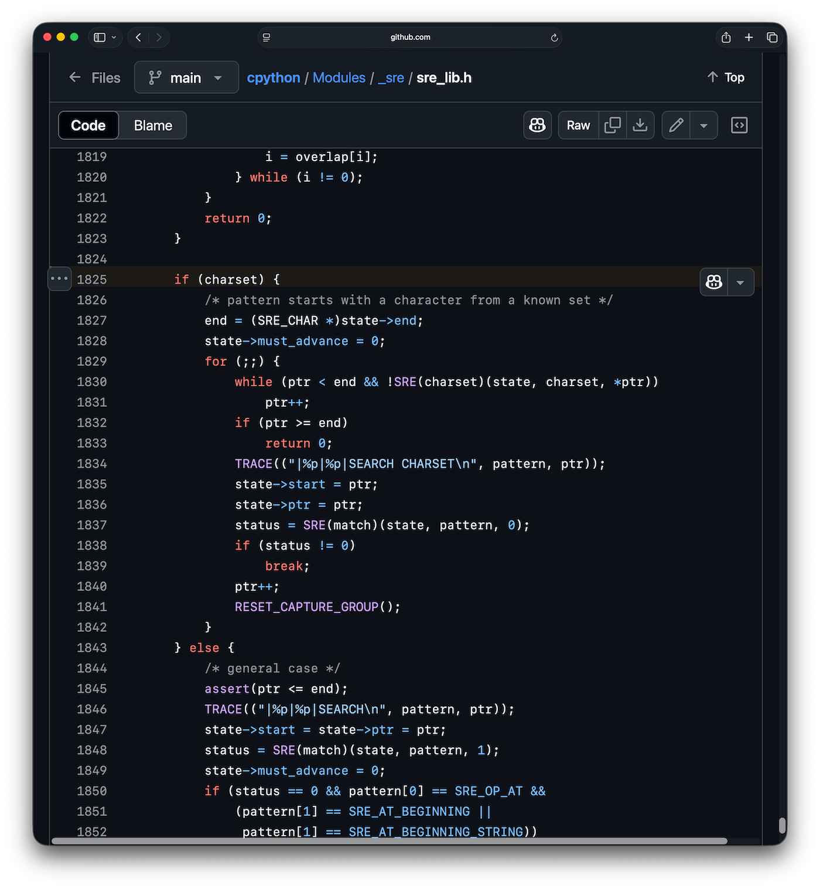

Associate Teaching Professor
Carnegie Mellon University
See the discussion of this post on Hacker News.
I was nerdsniped recently: What is the best way to detect if a string has a vowel in it?
This is trivial, right?
But as I started getting into it, I realized there is much more to this. I challenged myself to come up with as many ways to detect a vowel as possible. I even asked a few friends to give it a go. Which is the fastest? Which should never be used? Which is the most clever? Which is the most readable?
This post involves 11 different methods of detecting a vowel, algorithmic analysis, dissembling Python bytecode, inspecting the CPython implementation, and even looking at compiled regex opcodes. Let's go.
def has_vowels(s: str) -> bool:
...
This is the function stub I'm filling in. If there is at least one vowel in the input string, return True, otherwise return False. You can find the code from this post on GitHub.
I started with the naive approach:
def has_vowel(s):
for c in s.lower():
if c in "aeiou":
return True
return False
This is reasonable, readable, and probably without performance issues.
Except it does bother me that we are calling lower() which will always create a copy (appending to a string will sometimes mutate it in place but lower does not). We can fix it easily:
def loop_in(s):
for c in s:
if c in "aeiouAEIOU":
return True
return False
It is really just a more Pythonic form of:
def loop_or(s):
for c in s.lower():
if c == 'a' or c == 'e' or c == 'i' or c == 'o' or c == 'u':
return True
return False
And if we want to be exhaustive, then we should try a nested for loop:
def nested_loop(s):
vowels = "aeiouAEIOU"
for c in s:
for v in vowels:
if c == v:
return True
return False
Time to get interesting. Here is my favorite solution that I thought of:
def set_intersection(s):
return set(s) & set("aeiouAEIOU")
It is short, clean, and a little bit clever.
Put the input string into a set, put the vowels into another set, and do set intersection. Sets are quite efficient. Inserting into the first set is O(n), the second set is constant length so creating it is O(1), and the set intersection is proportional to the smaller of the two sets, which is constant length, so O(1), for a overall time complexity of O(n).
However, it will process the entire input string rather than terminate at the first vowel. For really long strings where vowels show up early, it will do a lot of useless work.
def any_gen(s):
return any(c in "aeiouAEIOU" for c in s)
People love one liners. I channeled my inner Pythonista and came up with a generator expression like this. I think the performance will be equivalent to the first method, plus a bit of overhead for the generator object.
Now that I'm getting into the functional headspace, we have to try recursion:
def recursion(s):
if not s:
return False
return s[0] in "aeiouAEIOU" or recursion(s[1:])
CPython won't bode well with this. It will create a new string for every character in the input string, and it will crash if the string length is 1000 (max recursion limit).
Whenever strings are involved, someone will say to use regex.
import re
def regex(s):
return bool(re.search(r'[aeiouAEIOU]', s))
In the best case, I expect this to have performance similar to the C-style loop with some additional overhead to initialize.
import re
def regex_replace(s):
return len(re.sub(r'[aeiouAEIOU]', '', s)) != len(s)
This will replace all vowels and then compare the string lengths to see if any were removed. It is inefficient because it won't short circuit and it creates a copy of the string.
Now that we have the obvious approaches, what else can we do?
def filter_lambda(s):
return bool(list(filter(lambda x: x in "aeiouAEIOU", s)))
It works but it is wasteful and won't terminate early.
Similar but perhaps a bit better:
def map_lambda(s):
return any(map(lambda x: x in "aeiouAEIOU", s))
Using lambdas does increase your coolness, but is this an improvement over what we have so far? The book Effective Python says, "list comprehensions are clearer than the map and filter built-in functions because they don't require lambda expressions". So it is less readable and likely less efficient than some of the other methods.
One of my former students, Gregory Croisdale, came up with an off-the-wall creative approach:
primes = [i for i in range(2, 1000) if factorial(i - 1) % i == (i - 1)]
def prime(s: str) -> bool:
vowels = "aeiouAEIOU"
vowel_primes_dict = {c: primes[ord(c)] for c in vowels}
try:
s_num = reduce(lambda acc, v: acc * primes[ord(v)], s, 1)
v_num = reduce(lambda acc, v: acc * vowel_primes_dict[v], vowels, 1)
return gcd(s_num, v_num) != 1
except Exception:
return False
It maps each character of the input string and each vowel to a unique prime, encodes the input string as the product of its characters' primes, and returns True if the GCD of that product with the product of vowel-primes exceeds 1 (meaning it shares a vowel prime). 🤯
What about parallelizing the search using threads? Break it up into n substrings and use one of the above methods on all the substrings. I tried. It was really, really slow. Perhaps if the strings were enormous (as in >1GB) and I disabled the GIL.
Alright, 11 methods covers the gamut of approaches that I can think of. Time to benchmark them!
I compared all of these functions on random strings, with and without vowels, of varying lengths. It generates 2000 random strings (half with no vowels) and runs each of the methods on that string 5 times. This is done 3 times and reports the fastest total time.
First, I tried it with a string length of 10 since the context of checking for vowels was in users' names.
| Function | Time (seconds) |
|---|---|
| loop_in | 0.001219 |
| regex | 0.002039 |
| any_gen | 0.002735 |
| regex_replace | 0.003047 |
| map_lambda | 0.003179 |
| recursion | 0.004066 |
| filter_lambda | 0.004234 |
| set_intersection | 0.004465 |
| loop_or | 0.008870 |
| nested_loop | 0.010895 |
| prime | 0.016482 |
Ok, this looks reasonable. All of the methods look fast at this length. Some notable things to call out: the simple loop_in is the winner but the very similar loop_or is quite slow. Regex search is fast—much faster than I expected actually. My beloved set intersection is plenty fast for real world use but doesn't look great in the ranking. Even the recursion beats it. Unsurprising, the prime number joke is slow. But not that slow.
The spread gets much more noticeable as the string length increases. Here are the results when the string length is 100:
| Function | Time (seconds) |
|---|---|
| regex | 0.003778 |
| regex_replace | 0.005480 |
| loop_in | 0.008526 |
| any_gen | 0.015479 |
| set_intersection | 0.015495 |
| map_lambda | 0.021085 |
| filter_lambda | 0.026546 |
| recursion | 0.040774 |
| prime | 0.077477 |
| loop_or | 0.082003 |
| nested_loop | 0.104956 |
Both regex methods pull ahead! The prime number is no longer last? The loop with the or and the nested loops are the slowest. Wow.
Here is a full table showing length 10, 100, 1000, and 10000.
| Function | 10 length | 100 length | 1000 length | 10000 length |
|---|---|---|---|---|
| regex | 0.002079 | 0.003778 | 0.020088 | 0.181247 |
| regex_replace | 0.003012 | 0.005480 | 0.027443 | 0.245306 |
| set_intersection | 0.004241 | 0.015495 | 0.082475 | 0.601355 |
| loop_in | 0.001170 | 0.008526 | 0.076880 | 0.763442 |
| any_gen | 0.002662 | 0.015479 | 0.137218 | 1.356772 |
| map_lambda | 0.003090 | 0.021085 | 0.192258 | 1.915244 |
| filter_lambda | 0.004305 | 0.026546 | 0.244302 | 2.424177 |
| loop_or | 0.007713 | 0.082003 | 0.769124 | 7.814960 |
| nested_loop | 0.008718 | 0.104956 | 0.797087 | 8.455867 |
| prime | 0.016113 | 0.077477 | 2.619118 | 203.579320 |
| recursion | 0.004064 | 0.040774 | DNF | DNF |
The regex methods are unbelievably fast regardless of string length. The C-style loops are very slow. I expected regex to be similar to these!? The prime number method begins to explode and everything else does just fine.
But I was also curious about how sparse vowels would impact the results. I reran the benchmark with vowels always placed in the last 10% of the string.
| Function | 10 length | 100 length | 1000 length | 10000 length |
|---|---|---|---|---|
| regex | 0.002083 | 0.004288 | 0.025301 | 0.235313 |
| regex_replace | 0.002950 | 0.005264 | 0.027415 | 0.244298 |
| set_intersection | 0.004346 | 0.015110 | 0.080171 | 0.660243 |
| loop_in | 0.001444 | 0.011158 | 0.100641 | 0.989452 |
| any_gen | 0.003282 | 0.019758 | 0.179111 | 1.770298 |
| map_lambda | 0.003757 | 0.026654 | 0.252468 | 2.528173 |
| filter_lambda | 0.004106 | 0.026335 | 0.244043 | 2.424267 |
| loop_or | 0.011777 | 0.123697 | 1.029399 | 10.184211 |
| nested_loop | 0.010682 | 0.106838 | 1.046352 | 10.762563 |
| prime | 0.016026 | 0.076423 | 2.605674 | 205.035926 |
| recursion | 0.005025 | 0.053011 | DNF | DNF |
Regex still dominates, but my beloved set intersection method does much better.
I also compared the re.search method to a pre-compiled regex (re.compile). The difference is quite large for small strings (0.009 seconds versus 0.2 seconds for 100,000 calls each with length 10) but neglible for long strings (0.234 seconds versus 0.235 seconds for 10,000 calls each with length 1000). CPython actually always compiles the regex and caches it, even if we don't explicitly call compile. See the logic in re/__init__.py. The difference then is just whether we include the compilation work and cache lookups in the benchmark time.
To summarize, for very short strings, loop_in is the fastest. At a length of 25, it is matched by regex. For longer strings, regex reigns supreme. Comparing loop_in to set_intersection, if vowels tend to appear early in the string, loop_in wins. If strings are long (>500 characters) or have sparse vowels, set_intersection wins.
You can find all the code on GitHub.
I was really surprised to see regex be that much faster. I expected it to have an overhead cost and then for it to converge with the basic loop method. I had to dig into this.
What is going on here? Let's inspect the Python bytecode for these methods.
def has_vowel(s):
for c in s:
if c in "aeiouAEIOU":
return True
return False
import re
def has_vowel(s):
return bool(re.search(r'[aeiouAEIOU]', s))
The bytecode for the loop approach:
LOAD_FAST s GET_ITER L1 FOR_ITER STORE_FAST c LOAD_FAST c LOAD_CONST 'aeiouAEIOU' CONTAINS_OP 0 POP_JUMP_IF_TRUE L2 JUMP_BACKWARD L1 L2 LOAD_FAST c SWAP POP_TOP RETURN_VALUE L3 END_FOR POP_TOP RETURN_CONST None
The meat consists of the 7 opcodes starting at label L1. Let's go through them one by one. FOR_ITER pops the iterator and tries to get the next character (if there isn't one, it jumps to L3). STORE_FAST stores the current character into a local variable. LOAD_FAST places the character back onto the stack. LOAD_CONST pushes the vowel string onto the stack. CONTAINS_OP pops the two items off the stack, performs the in check, and pushes True or False to the stack. POP_JUMP_IF_TRUE jumps to L2 if the character was a vowel, otherwise continue. JUMP_BACKWARD goes back to L1 to repeat the process.
These 7 opcodes execute for every single character. They are simple (except maybe CONTAINS_OP) though there is certainly some redudant work (like putting the vowel string on the stack each time).
Compare it to the regex bytecode:
LOAD_GLOBAL re LOAD_ATTR search PUSH_NULL LOAD_CONST '[aeiouAEIOU]' LOAD_FAST s CALL 2 RETURN_VALUE
It just calls out to a C function. Looking at the implementation of CPython's regex engine (sre.c and sre_lib.h), it creates an internal representation of the regex, iterates using a single for loop, and uses a table lookup (not a nested loop). The relevant code is found in the if block on line 1825 in sre_lib.h:
I wanted to get an idea of what the internal representation of the regex looks like, so I ran re.compile("[aeiouAEIOU]", re.DEBUG), which prints out:
IN
LITERAL 97
LITERAL 101
LITERAL 105
LITERAL 111
LITERAL 117
LITERAL 65
LITERAL 69
LITERAL 73
LITERAL 79
LITERAL 85
0: INFO 14 0b100 1 1 (to 15)
in
5: CHARSET [0x00000000, 0x00000000, 0x00208222, 0x00208222,
0x00000000, 0x00000000, 0x00000000, 0x00000000]
14: FAILURE
15: IN 11 (to 27)
17: CHARSET [0x00000000, 0x00000000, 0x00208222, 0x00208222,
0x00000000, 0x00000000, 0x00000000, 0x00000000]
26: FAILURE
27: SUCCESS
The literals are the individual vowels, uppercase and lowercase. CHARSET does a single lookup to see if the current character is a vowel using a bitmap. Very clever! (I'm not sure why it has a second check rather than just continuing.)
The huge performance difference we are seeing is a combination of the interpreter overhead and the optimized regex engine.
Well, that was a fun rabbit hole. The results really were not what I expected. Regex are really fast and non-Pythonic code can be slow in comparison. In the end, should any of this change how you do string searches? No, not really. Do what ever is the easiest to maintain unless you are working with millions of strings and care about milliseconds. It was fun learning how all this works though.
Now I can answer the question: What is the fastest way to detect a vowel in a string? A bitmap in C, probably.
Update: Kranar found that Python's find(), implemented in fastsearch.h in C, outperforms the regex considerably. This reinforces that the CPython interpreter is the reason for the large performance differences.
def vowel_find(s):
for c in "aeiouAEIOU":
if s.find(c) != -1:
return True
return False